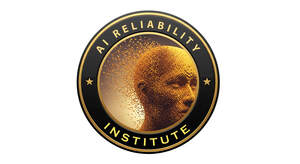
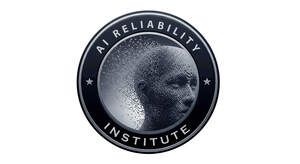

Trade Mark Journal No.2025/050 12 December 2025
UK00004300378 25 November 2025 (41)
Mark 1

Mark 2

- Class 41
- Accreditation [certifying] of educational achievement; Certification in relation to educational awards; Providing training and educational examination for certification purposes; Accreditation of professional competency; Educational certification services, namely, providing training and educational examination; Accreditation of educational services; Awarding of educational certificates; Provision of training courses; Training courses (Provision of -); Vocational training courses (Provision of -); Training courses; Preparation of educational courses and examinations; Setting of training standards; Development of educational courses and examinations; Vocational training; Training; Provision of skill assessment courses; Provision of training courses in personal development; Organisation of training courses; Education and training; Employment training; Provision of training services for industry; Organisation of examinations to grade level of achievement; Provision of educational examinations and tests; Provision of training and education; Provision of education and training; Training and further training consultancy; Providing courses of training; Courses (Training -) relating to insurance; Vocational skills training (Provision of -); Postgraduate training courses; Vocational testing; Training and instruction; Courses (Training -) relating to management; Publication of training manuals; Education and training consultancy; Training courses relating to system analysis; Education examination; Arrangement of training courses in teaching institutes; Residential training courses; Vocational skills training; Provision of training; Vocational training services; Education and training services in the field of occupational health and safety; Written training courses; Teacher training services; Education and training in the field of occupational health and safety; Guidance (Vocational -) [education or training advice]; Vocational guidance [education or training advice]; Vocational education and training services; Training in the development of software systems; Providing training courses on business management; Medical training and teaching; Career and vocational training; Provision of courses of instruction in the management of information technology; Training and education services; Education and training services; Management training services; Provision of online training; Education, teaching and training; Providing of continuous training courses; Courses (Training -) relating to law; Training in administration; Education and training in the field of business management; Provision of instruction courses in general management; Training services in the field of project management; Training consultancy; Teaching and training in business, industry and information technology; Courses (Training -) relating to engineering; Training services; Publication of educational and training guides; Provision of facilities for employment skills training; Issuing of educational awards; Instructional and training services; Provision of educational examinations; Advanced training; Consultancy services relating to the analysis of training requirements; Providing of further training courses; Organisation of training seminars; Career advisory services (education or training advice); Training in the design of software systems; Training in the operation of software systems; Training services relating to computer-aided testing; Consultancy services relating to the development of training courses; Educational and training programs in the field of risk management; Postgraduate training courses relating to management studies.
AI RELIABILITY INST.